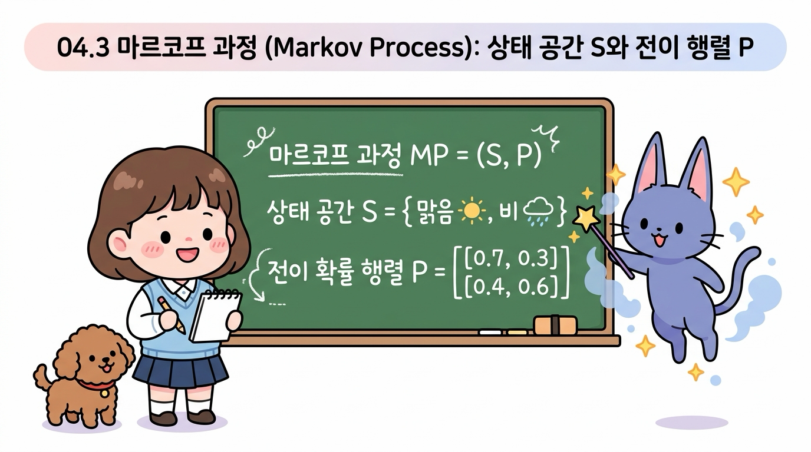
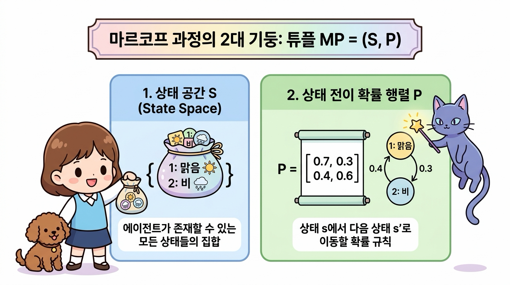
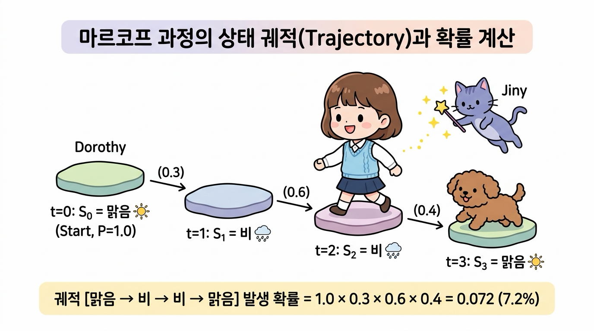
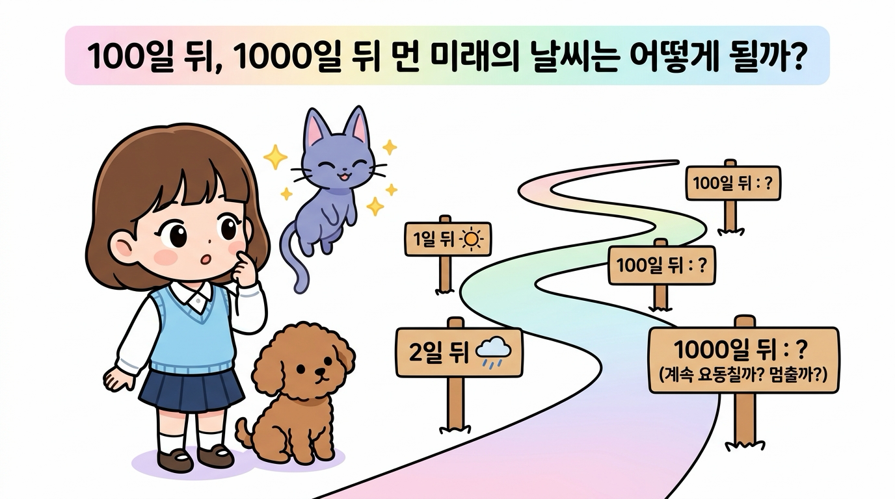
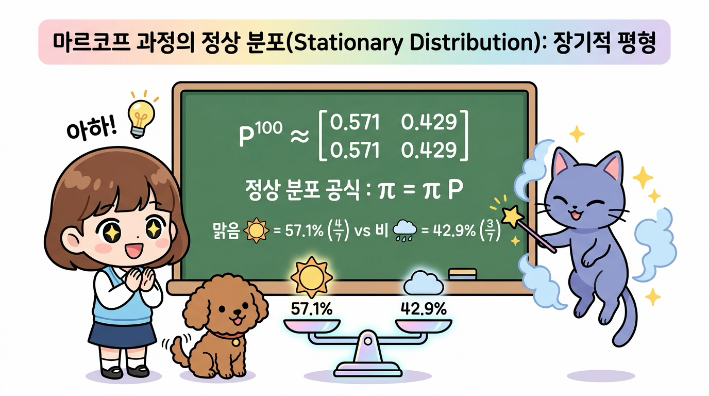
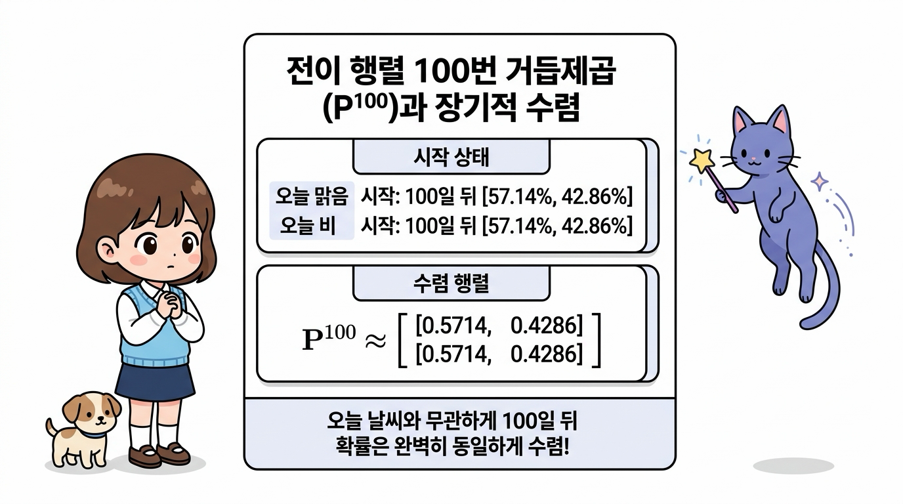
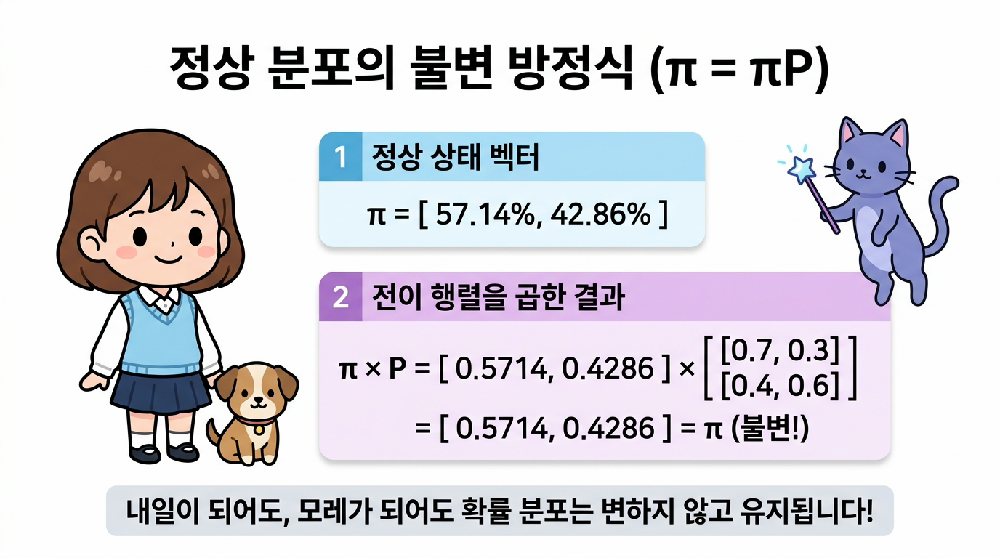
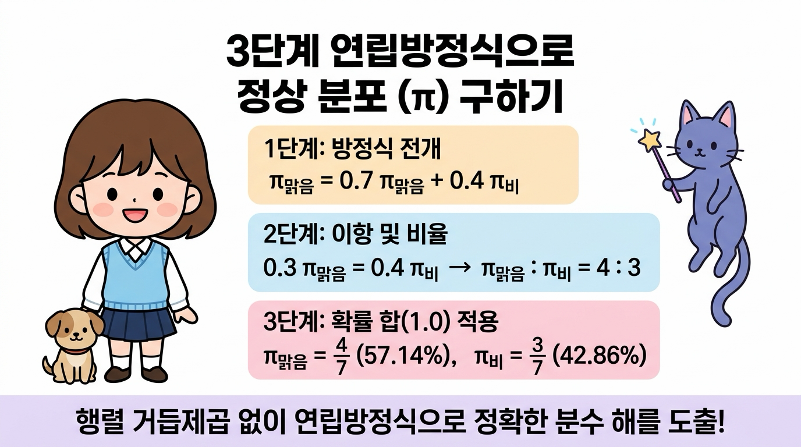
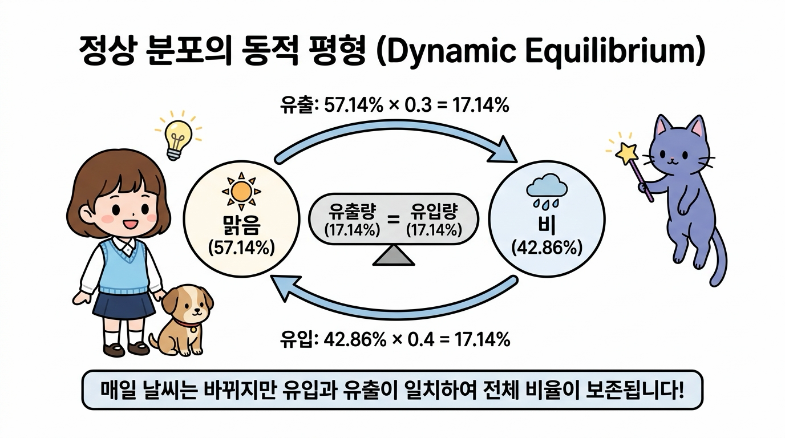
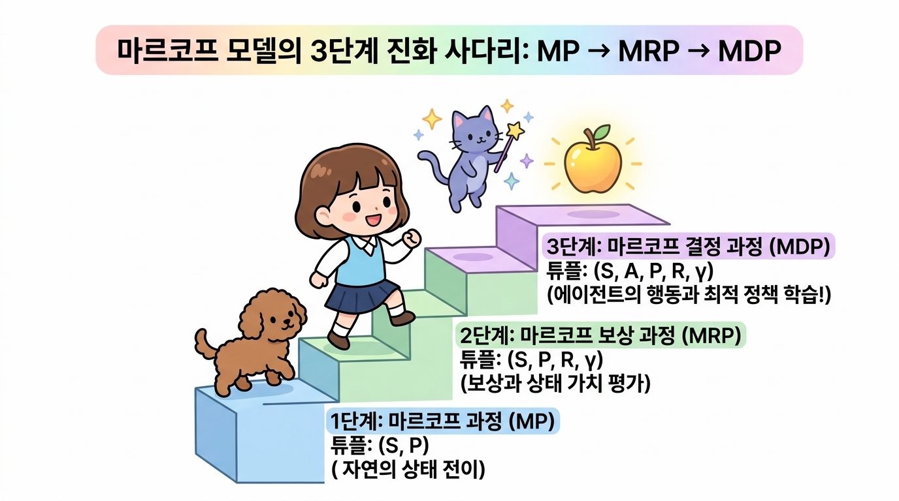

04.3 마르코프 과정 (Markov Process)
우리는 앞서 4.1절에서 “미래는 오직 현재에 의해서만 결정된다”는 마르코프 성질(Markov Property)을 배웠고, 4.2절에서 상태들이 사슬처럼 연결되어 확률적으로 변화하는 마르코프 체인(Markov Chain)을 공부했습니다.
이번 4.3절에서는 이러한 원리들을 하나로 모아, 마르코프 성질을 띤 무작위 상태 변화 시스템 자체를 엄밀한 수학적 언어로 정립한 마르코프 과정(Markov Process, MP)을 탐험해 봅니다.
상태들의 전체 집합인 상태 공간(S)과 이들 간의 확률 지도를 담은 상태 전이 확률 행렬(P)의 튜플 정의, 시간에 따라 이어지는 궤적(Trajectory), 그리고 강화학습의 최고봉인 MDP로 도약하는 연결 고리를 도로시, 토토와 함께 신나게 배워보아요!

그림 04-3-1 상태 공간 S와 상태 전이 확률 행렬 P로 구성된 마르코프 과정의 기본 수학적 튜플 모델을 공부하는 지니와 도로시, 토토
04.3.1 마르코프 과정의 수학적 정의 (튜플 MP = (S, P))
마르코프 과정(Markov Process, MP)은 “마르코프 성질을 만족하는 무작위 상태 전이 시스템 그 자체”를 나타내는 가장 순수하고 기초적인 확률 모델입니다.
수학에서는 복잡한 시스템을 군더더기 없이 간결하게 표현하기 위해 여러 요소를 괄호로 묶은 튜플(Tuple) 표기법을 사용합니다. 마르코프 과정은 딱 2가지 핵심 요소로 이루어진 튜플로 완벽하게 정의됩니다:

그림 04-3-2 마르코프 과정을 이루는 2대 기둥: 에이전트가 존재할 수 있는 모든 상태들의 집합인 ‘상태 공간 S‘와 이동 확률 규칙인 ‘상태 전이 행렬 P’
튜플을 구성하는 두 기둥을 하나씩 자세히 살펴봅시다:
- 상태 공간 (State Space, S):
- 시스템이나 에이전트가 존재할 수 있는 모든 가능한 유한한 상태들의 전체 집합입니다.
- 도로시의 모험 지도에 비유하면, 발을 디딜 수 있는 모든 ‘목적지 섬(Island)들의 주머니’에 해당합니다.
- 날씨 예제: S = { 1: 맑음, 2: 비 }
- 상태 전이 확률 행렬 (State Transition Probability Matrix, P):
- 현재 상태 s에서 다음 상태 s’로 시간이 지나 이동할 확률 Pss’들을 2차원 표로 정갈하게 모아둔 행렬입니다.
- 목적지 섬들 사이를 이어주는 ‘바람과 파도의 확률 지도’에 해당합니다.
-
수식: Pss’ = P( St+1 = s’ St = s ) - 날씨 예제:
P = [ [ 0.7, 0.3 ], [ 0.4, 0.6 ] ]
💡 용어 짚고 넘어가기: 마르코프 체인 vs 마르코프 과정
- 마르코프 체인(Markov Chain): 주로 시간이 째깍째깍 불연속적인 타임 스텝(t = 0, 1, 2, …)으로 흐르고, 상태 공간이 이산적(셀 수 있음)일 때 상태들이 사슬처럼 꼬리를 물고 이어지는 ‘현상과 구조’를 친근하게 부르는 이름입니다.
- 마르코프 과정(Markov Process): 이를 수학적이고 일반적인 확률 과정(Stochastic Process)의 관점에서 튜플 (S, P)로 엄밀하게 정의한 ‘시스템 모델 자체’를 뜻합니다. 둘은 사실상 같은 대상의 수학적 동의어로 널리 혼용됩니다.
04.3.2 상태의 시퀀스: 궤적 (Trajectory)
마르코프 과정이 실제로 작동하기 시작하면, 시간의 흐름(t = 0, 1, 2, 3, …)에 따라 에이전트는 하나의 상태에서 다음 상태로 퐁당퐁당 이동하게 됩니다.
이렇게 에이전트가 시간 순서대로 지나간 상태들의 역사적 발자국 순서열(시퀀스)을 강화학습에서는 궤적(Trajectory, 트래젝터리) 또는 에피소드(Episode), 이력(History)이라고 부릅니다:

그림 04-3-3 이산 타임 스텝(t = 0, 1, 2, 3)을 따라 징검다리를 건너듯 상태들이 이어지는 궤적(Trajectory)과 결합 확률 계산 원리
🎲 날씨 궤적의 실제 발생 예시
우리가 배운 날씨 마르코프 과정 (S, P)에서 오늘(t=0) 맑음으로 시작하여 3일간 날씨가 변화하는 궤적을 관찰했다고 해봅시다:
- t = 0: 오늘 날씨 S0 = 맑음 ☀️ (시작 상태, 100%)
- t = 1: 0.3의 확률을 뚫고 내일 날씨가 S1 = 비 🌧️ 로 바뀌었습니다.
- t = 2: 0.6의 유지 확률로 모레 날씨도 S2 = 비 🌧️ 가 이어졌습니다.
- t = 3: 0.4의 갤 확률로 글피 날씨가 S3 = 맑음 ☀️ 으로 복귀했습니다.
이때 완성된 궤적은 [ 맑음 ☀️ → 비 🌧️ → 비 🌧️ → 맑음 ☀️ ] 입니다.
🧮 궤적의 결합 확률(Joint Probability) 계산법
마르코프 성질 덕분에, 이 특정한 궤적이 세상에 실제로 펼쳐질 전체 결합 확률은 각 단계의 전이 확률들을 단순히 차례대로 곱하기(연쇄 법칙)만 하면 명쾌하게 계산됩니다:
= P(S0=맑음) × P(S1=비 | S0=맑음) × P(S2=비 | S1=비) × P(S3=맑음 | S2=비)
= 1.0 × 0.3 × 0.6 × 0.4 = 0.072 (7.2%)
즉, 오늘 맑음에서 시작하여 3일 동안 정확히 이 순서대로 날씨가 바뀔 확률은 정확히 7.2%입니다!
04.3.3 마르코프 과정의 장기적 균형: 정상 분포 (Stationary Distribution)
도로시가 궤적 계산을 보며 지니에게 한 가지 깊은 질문을 던졌습니다.
👧 도로시의 호기심:
“지니! 1일 뒤, 2일 뒤, 3일 뒤는 행렬을 곱해서 계산할 수 있잖아.
그럼 100일 뒤나 1000일 뒤처럼 아주 먼 미래가 되면 날씨 확률은 어떻게 될까? 끝없이 마구 요동칠까, 아니면 어떤 값에 가만히 멈출까?”

그림 04-3-4 “100일 뒤, 1000일 뒤처럼 아주 먼 미래의 날씨 확률은 어떻게 될까? 계속 요동칠까, 멈출까?” 궁금해하는 도로시와 토토
지니가 빙그레 미소를 지으며 마법 지팡이로 거대한 저울을 만들어 보였습니다.
🧞♂️ 지니의 마법 노트: 영원한 시간 끝에 찾아오는 평형의 마법!
“놀랍게도 도로시, 전이 행렬을 10번, 50번, 100번 끝없이 거듭제곱하다 보면(P100), 놀랍게도 오늘 날씨가 맑았든 비가 왔든 상관없이 미래의 확률이 언제나 똑같은 고정된 수치로 수렴한단다!
이것을 수학에서는 정상 분포(Stationary Distribution, 정지 분포)라고 부르지!”

그림 04-3-5 전이 행렬을 거듭 곱할수록 오늘 날씨와 무관하게 일정한 장기적 평형 비율(맑음 57.1% vs 비 42.9%)로 수렴하는 정상 분포(π = πP)의 균형 원리
1) 행렬 거듭제곱(P100)을 통한 장기적 수렴 확인
실제로 전이 행렬 P를 100번 거듭제곱해보면 다음과 같이 모든 행의 숫자가 완벽하게 동일한 값으로 수렴합니다:
- 첫 번째 행 (오늘 맑음으로 시작했을 때): 100일 뒤 맑을 확률 약 57.14% (정확히 4/7), 비 올 확률 약 42.86% (정확히 3/7)
- 두 번째 행 (오늘 비로 시작했을 때): 100일 뒤 맑을 확률 약 57.14% (정확히 4/7), 비 올 확률 약 42.86% (정확히 3/7)
💡 놀라운 사실: 오늘 날씨가 맑았든 비가 쏟아졌든 상관없이, 시간이 충분히 흐르면 과거의 기억은 깨끗이 잊혀지고 시스템 고유의 평형 비율인 57.14% : 42.86%로 완벽하게 수렴합니다!

그림 04-3-6 오늘 날씨(맑음 또는 비)와 무관하게 전이 행렬을 100번 거듭제곱(P¹⁰⁰)하면 동일한 확률 비율(57.14% : 42.86%)로 수렴하는 장기 기억 소멸 원리
2) 정상 분포의 수학적 불변 방정식: π = π P
도로시가 고개를 갸우뚱하며 다시 물었습니다.
👧 도로시: “지니! 100일 뒤에 [ 0.5714, 0.4286 ]이 되었다면, 101일 뒤에는 확률이 또 바뀌는 거야?”
🧞♂️ 지니: “전혀 아니란다! 바로 그 이유 때문에 ‘정상(Stationary - 정지해 있는, 불변의)’ 분포라고 부르는 거야. 이 확률에 전이 행렬 P를 한 번 더 곱해도 확률은 조금도 변하지 않고 그대로 유지된단다!”
정상 분포 벡터를 π = [ π맑음, π비 ] = [ 0.5714, 0.4286 ] 라고 할 때, 실제로 다음 날의 확률을 곱해보면:
= [ (0.5714 × 0.7 + 0.4286 × 0.4), (0.5714 × 0.3 + 0.4286 × 0.6) ]
= [ (0.4000 + 0.1714), (0.1714 + 0.2572) ]
= [ 0.5714, 0.4286 ] = π (완벽한 불변!)
즉, 정상 분포는 시간이 아무리 흘러도 스스로의 상태를 보존하는 불변의 정상 상태 방정식을 만족합니다:
π = π P (단, π맑음 + π비 = 1.0)

그림 04-3-7 정상 분포(π = [0.5714, 0.4286])에 전이 행렬(P)을 곱해도 확률 분포가 변하지 않고 그대로 유지되는 불변 상태 방정식(π = πP)
3) 3단계 연립방정식으로 정상 분포 직접 구하기
컴퓨터로 100번 행렬을 곱하지 않고도, 수학적으로 손쉽게 정확한 분수 값(4/7, 3/7)을 구하는 3단계 비법입니다.
- 1단계: 방정식 전개하기
- [ π맑음, π비 ] = [ π맑음, π비 ] × [ [0.7, 0.3], [0.4, 0.6] ]
- π맑음 = 0.7 π맑음 + 0.4 π비
- 2단계: 이항하여 두 상태의 비율 구하기
- π맑음 - 0.7 π맑음 = 0.4 π비
- 0.3 π맑음 = 0.4 π비 → 3 π맑음 = 4 π비
- 즉, π맑음 : π비 = 4 : 3의 비율이 성립합니다!
- 3단계: 전체 확률의 합 = 1 적용하기
- π맑음 + π비 = 1.0
- π맑음 = 4 / (4 + 3) = 4/7 ≈ 57.14%
- π비 = 3 / (4 + 3) = 3/7 ≈ 42.86%

그림 04-3-8 전개 → 이항 및 비율 유도 → 확률의 총합(1.0) 적용의 3단계를 거쳐 정상 분포 분수 해(4/7, 3/7)를 도출하는 과정
4) 동적 평형(Dynamic Equilibrium)의 직관적 물리 원리
도로시가 손뼉을 치며 물었습니다.
👧 도로시: “아하! 그런데 날씨는 매일 맑았다가 비가 왔다가 계속 바뀌는데, 어떻게 전체 확률 비율은 딱 멈춰 있을 수 있어?”
🧞♂️ 지니: “정말 날카로운 질문이야 도로시! 날씨 변화 자체가 멈춘(정적, Static) 것이 아니라, 맑음에서 비로 바뀌는 유출량과 비에서 맑음으로 바뀌는 유입량이 완벽하게 같아졌기 때문이란다! 이를 동적 평형(Dynamic Equilibrium)이라고 불러!”
-
맑음 → 비로 빠져나가는 확률 흐름: π맑음 × P(비 맑음) = 57.14% × 30% = 17.14% -
비 → 맑음으로 들어오는 확률 흐름: π비 × P(맑음 비) = 42.86% × 40% = 17.14%
두 상태 사이를 오가는 확률의 흐름이 정확히 17.14%로 똑같기 때문에, 전체 날씨의 거시적 비율(57.1% : 42.9%)은 마치 호수 표면처럼 잔잔하게 평형을 유지하는 것입니다.

그림 04-3-9 맑음에서 비로 나가는 유출량(17.14%)과 비에서 맑음으로 들어오는 유입량(17.14%)이 완벽히 일치하여 거시적 확률을 보존하는 동적 평형(Dynamic Equilibrium)의 원리
5) 정상 분포의 무한한 활용: 구글 페이지랭크와 강화학습
이 정상 분포(π = πP)는 단순히 날씨를 맞히는 데 그치지 않고 현대 인공지능과 컴퓨터 과학의 토대가 되었습니다:
- 🌐 구글(Google)의 페이지랭크(PageRank):
- 인터넷 사용자가 웹페이지의 링크를 무작위로 클릭하며 서핑하는 것을 마르코프 과정으로 모델링했습니다.
- 끝없이 서핑했을 때 사용자가 가장 자주 머무르는 정상 분포(π) 확률이 높은 웹페이지일수록 검색 순위 1위에 올려놓는 혁신을 만들어냈습니다.
- 🤖 강화학습에서의 상태 방문 분포(State Visitation Distribution):
- 에이전트가 어떤 고정된 정책(Policy)으로 환경을 탐험할 때, 어떤 위험한 상태나 유리한 상태에 장기적으로 얼마나 자주 도달하는지 분석하는 핵심 척도로 사용됩니다.
04.3.4 마르코프 모델의 3단계 진화 사다리: MP → MRP → MDP
우리가 마르코프 과정(MP)을 배우는 진정한 이유는 무엇일까요? 바로 인공지능 강화학습의 완전체인 마르코프 결정 과정(MDP)을 정복하기 위한 첫 번째 계단이기 때문입니다.
마르코프 이론은 다음과 같이 3단계 진화 사다리를 거쳐 완전한 강화학습으로 완성됩니다:

그림 04-3-10 마르코프 과정(MP)에 보상(R)이 붙어 마르코프 보상 과정(MRP)이 되고, 에이전트의 행동(A)이 결합하여 마르코프 결정 과정(MDP)으로 도약하는 3단계 진화 사다리
- 1단계: 마르코프 과정 (Markov Process, MP)
- 튜플: ( S, P )
- 의미: 에이전트의 개입 없이, 오직 환경의 자연스러운 물리 법칙과 상태 전이만이 존재하는 기초 세계입니다.
- 2단계: 마르코프 보상 과정 (Markov Reward Process, MRP)
- 튜플: ( S, P, R, γ )
- 의미: 마르코프 과정 위에 즉각 보상(R)과 시간의 가치를 할인하는 할인율(γ)을 추가한 모델입니다. 도로시가 특정 상태에 도달했을 때의 ‘상태 가치(Value, v(s))’를 벨만 방정식으로 평가할 수 있게 됩니다.
- 3단계: 마르코프 결정 과정 (Markov Decision Process, MDP)
- 튜플: ( S, A, P, R, γ )
- 의미: 환경의 흐름에 에이전트의 능동적인 선택인 ‘행동(Action, A)’을 결합한 강화학습의 완성형 모델입니다. 도로시가 어느 방향으로 발걸음을 옮겨야 보상을 극대화할 수 있는지 최적의 정책(Policy, π*)을 찾아 스스로 학습합니다.
04.3.5 이번 절의 핵심 요약
그림 04-3-11 도로시, 토토, 지니와 함께 완성하는 마르코프 과정(Markov Process) 완전 정복
- 마르코프 과정(Markov Process, MP)의 튜플 정의
- 마르코프 성질을 만족하는 무작위 상태 변화 시스템으로, 상태 공간과 전이 행렬의 튜플 MP = ( S, P )로 엄밀하게 정의됩니다.
- 상태 공간(S)과 상태 전이 확률 행렬(P)
- S는 에이전트가 존재할 수 있는 모든 상태들의 유한 집합이며, P는 상태 s에서 s’로 넘어갈 전이 확률(Pss’)들을 담은 2차원 정방행렬입니다.
- 궤적(Trajectory)과 결합 확률
- 시간의 흐름(t = 0, 1, 2, …)에 따라 에이전트가 밟아간 상태들의 순서열 τ = (S0, S1, …, ST)을 뜻하며, 마르코프 성질에 의해 각 단계 전이 확률의 단순 연쇄 곱으로 결합 확률을 손쉽게 계산합니다.
- 정상 분포(Stationary Distribution, π = πP)
- 시간이 무한히 흐르면 초기 상태와 무관하게 장기적으로 일정하게 수렴하는 평형 확률 분포(맑음 57.1% vs 비 42.9%)입니다.
- MDP로 향하는 3단계 진화 체계
- MP (S, P) → 보상과 할인율이 추가된 MRP (S, P, R, γ) → 에이전트의 행동이 추가된 완성형 MDP (S, A, P, R, γ)의 논리적 계층 구조를 이해합니다.
이제 마르코프 과정(MP)의 수학적 튜플 정의와 궤적 계산, 그리고 정상 분포의 원리까지 완벽하게 정복했습니다!
다음 04.4 은닉 마르코프 모델 (Hidden Markov Model, HMM)으로 넘어가 상태가 장막 뒤에 숨겨져 있을 때 겉보기 관측 신호로 진실을 역추적하는 마법의 확률 모델을 정복해봅시다!